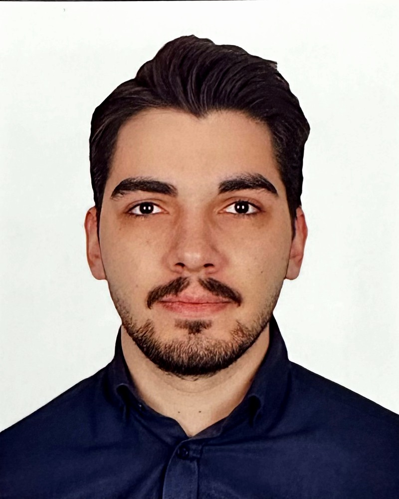

Mühendislik verisini, ilk tasarımdan üretim hattına kadar düzenli tutarım.
Ben Uğur, BMC Otomotiv'de Mühendislik IT ekibinde çalışan bir makine mühendisiyim. 500 kullanıcılı 3DEXPERIENCE / ENOVIA platformunu ve 15'ten fazla mühendislik yazılımının lisans ve sunucu altyapısını yönetiyorum.

Lisans, Makine Mühendisliği
Deneyim
PLM Çözüm Mühendisi
Mühendislik Uygulamaları Uzmanı
- Platform taşıma ve yükseltme. 500 kullanıcılı 3DEXPERIENCE / ENOVIA platformunu Windows üzerindeki 2021x sürümünden Linux üzerindeki 2024x sürümüne taşıdım; canlı geçiş tek bir hafta sonunda, iş kesintisi olmadan tamamlandı. Sistem testlerini yürüttüm, yeni dokümantasyon yazdım ve eskileri güncelledim; kullanıcıları ortak bir test şablonuyla kabul testlerinde yönlendirdim, bildirdikleri her bulguyu birlikte ele aldım, toplantı ve demolarla eğitim verdim ve Offline Help modülünü kullanıma aldım.
- Mükerrer parça birleştirme. İki PLM sistemi birleştirildikten sonra, sunucu tarafı MQL betikleri ve koordinat matrisi hesaplarıyla yaklaşık 15.000 montajdaki yaklaşık 229.000 örneği yeniden konumlandırdım; mükerrer standart parçaları teke indirdim ve tahmini 1.100 adam-günlük elle işi ortadan kaldırdım. Nasıl yapıldı.
- DELMIA devreye alma. DELMIA'yı tesis genelinde devreye aldım; üretimi tasarım, analiz, konfigürasyon ve proje mühendisliğinin yanında PLM platformuna dahil ettim. Canlıya geçiş sürecinde ve sonrasında eğitim ve birebir destek sağladım.
- Elektrik tasarım yazılımı geçişi. Vesys 2019'dan Capital Essentials'a geçişi, elektrik tasarım çalışmasını aksatmadan yönettim; şu an hem Capital Essentials 2308'i hem de başka bir ekibin hâlâ kullandığı Vesys 2018'i yönetiyorum.
- Kullanıcı sahiplenmesi. Araç Tasarımı, Konfigürasyon Yönetimi, Üretim Mühendisliği ve Üretim birimlerinden 100'den fazla kullanıcıya eğitim verdim ve sisteme alıştırdım.
- Mühendislik yazılımları ve lisanslama. ANSYS, Altair, MSC, MATLAB, PTC Creo / Windchill ve IBM DOORS dahil 15'ten fazla ürünün lisans ve uygulama sunucularını FlexNet ve RLM lisans sunucuları üzerinden yönetiyorum.
- Bilgi güvenliği ve denetimler. Yıllık ISO 9001 ve ISO/IEC 27001 denetimlerinde PLM'i temsil ediyorum. PLM varlık ve risk envanterlerini oluşturdum, erişim yönetimi prosedürlerini yazdım.
Yetkinlikler
Tez
Windows'tan Açık Kaynak Sunuculara PLM Geçiş Stratejileri ve Yaklaşımları
Birçok şirket PLM sistemlerini Windows sunucularda çalıştırıyor ve bunun bedelini lisans maliyeti ve sınırlı esneklikle ödüyor. Tezim, böyle bir sistemi Linux'a taşımanın neler gerektirdiğini teknik, kurumsal ve finansal yönleriyle birlikte ele alıyor.
Tezin merkezinde 500 kullanıcılı bir PLM ortamından vaka çalışması var: ENOVIA'nın R2021x'ten R2024x'e yükseltilmesi sırasında uygulama ve doküman sunucuları Windows'tan Oracle Linux'a taşındı. Veritabanı aynı donanımda, Windows üzerinde kaldı.
- Geçişten sonraki üç ayda, sistemin yavaşlığıyla ilgili destek talepleri önceki düzeyin dörtte birine düştü.
- Windows Server lisansları dokuz makineden ikiye indi. Artık gerekmeyen bir disk yükseltmesiyle birlikte, ilk yılda doğrudan tasarruf 15.000 USD'yi aştı.
- Geçiş, teknik olduğu kadar bir değişim yönetimi projesidir. Eğitim, yönetim desteği ve net roller sürecin ne kadar sorunsuz ilerleyeceğini belirledi.
Yazılar
PLM'de üzerinde çalıştığım sorunlara dair kısa notlar.
Hakkımda
Dokuz Eylül Üniversitesi'nde makine mühendisliği okudum; Team Solaris ile S11 güneş arabasının aerodinamiği üzerinde çalıştım ve kısa süre sonra PLM'e geçtim. PLM, bir tasarımın çizim olmaktan çıkıp fabrikanın üretebileceği bir şeye dönüştüğü noktadır; herkesin aynı sürümle çalıştığından emin olan kişi olmayı seviyorum.
İş dışında elektro gitar ve piyano çalıyorum, 3D baskıyla uğraşıyorum ve spora vakit ayırıyorum.
İletişim
Bir PLM problemi üzerinde mi çalışıyorsunuz? Konuşmaktan memnuniyet duyarım.